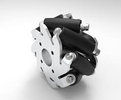
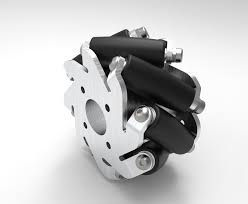

Mechanical Designing
Gripper
A gripper is a device used to grasp and hold objects securely. Grippers come in various forms, ranging from simple mechanical claws to sophisticated robotic hands equipped with sensors and actuators. The design of a gripper depends on its intended application and the characteristics of the objects it needs to handle. Basic grippers typically consist of rigid or flexible fingers that can close around an object to hold it firmly. They may use mechanisms such as springs, pneumatic cylinders, or electric motors to control the opening and closing motion. Grippers can be mounted on robotic arms, industrial machinery, or automated assembly lines to perform tasks such as picking up parts, sorting items, or manipulating objects in manufacturing, logistics, and other industries.
wheels
 

Omni Wheels : An omni wheel is a specialized wheel design used in robotics and vehicles to achieve omnidirectional movement. Unlike traditional wheels that only allow movement along one axis (forward and backward or side to side), omni wheels enable movement in any direction without requiring steering mechanisms or additional propulsion systems. The design of an omni wheel typically consists of a central hub with multiple rollers or rollers attached at an angle around its circumference. These rollers have a unique profile that allows the wheel to move freely in any direction while rotating around its axis. By combining multiple omni wheels mounted at different orientations, a vehicle or robot can achieve omnidirectional motion.
Mechanum Wheels: Mecanum wheels offer a more sophisticated design that provides superior performance in various terrains. Let's explore their intricacies: Unlike omni wheels, Mecanum wheels have rollers se t at an angle of 45 degrees on the main wheel body. These angled rollers are the secret sauce of Mecanum wheels. Applications of mechanum wheels are Robotics competitions where maneuverability and power are crucial.Search and rescue robots that need to navigate uneven terrain.Industrial robots operating in dynamic environments with varying floor conditions.
Base Frame

Robot chassis are the structural framework or body of a robot, analogous to the skeleton of a living organism. They provide support and house various components such as sensors, actuators, power systems, and control electronics. Chassis come in a variety of shapes, sizes, and materials, depending on the specific application and requirements of the robot.Some common types of robot chassis include: Wheeled Chassis,Tracked Chassis,Legged Chassis,Aerial Chassis,Submersible Chassis,Custom Chassis.
Electronics and Communication
Microcontrollers
Microcontrollers are compact integrated circuits that function as the brain of embedded systems. They contain a CPU (Central Processing Unit), memory (RAM, ROM, EEPROM), and various peripherals like timers, serial communication interfaces (UART, SPI, I2C), analog-to-digital converters (ADC), and digital I/O pins, all on a single chip. There are various types of Microcontrollers avalaible in market.Most commonly we used in our bots are ESP32,Ardiuno and Rpi.
Motor Drivers
Mdds10 : MDDS10 likely refers to the "MDDS10" motor driver board, which is commonly used in robotics and mechatronics projects. The MDDS10 is a motor driver board designed to control DC brushed motors and stepper motors. It typically features multiple motor channels, allowing users to control the speed and direction of motors independently. These motor driver boards often provide additional features such as current sensing, overcurrent protection, and various input interfaces (such as PWM control and serial communication) for easy integration into different projects. The MDDS10 and similar motor driver boards are popular choices for hobbyists, students, and professionals alike, providing a convenient and reliable way to drive motors in various applications.
Mdds30: The "MDDS30" is likely another motor driver board, possibly a more advanced version or a variation of the MDDS10. Like its predecessor, it is designed to control DC brushed motors and stepper motors, offering multiple motor channels for independent control of motor speed and direction. The "30" in its name might suggest that it supports higher power motors or has additional features compared to the MDDS10. These features could include higher current ratings, more advanced control algorithms, additional protection mechanisms, or enhanced communication interfaces for seamless integration into robotics, automation, and mechatronics projects. Overall, the MDDS30 likely serves as a versatile solution for driving motors in various applications, providing flexibility, reliability, and performance for both hobbyist and professional projects.
Communication Protocols
1.UART: Simple serial protocol for asynchronous communication between two devices, often used for microcontroller-to-microcontroller and sensor communication.
2.SPI: Synchronous protocol enabling multiple devices on the same bus, commonly used in master-slave configurations for communication with sensors, displays, and memory chips.
3.I2C: Serial protocol for communication between integrated circuits on a shared bus, facilitating connections with various peripherals like sensors, EEPROMs, and real-time clocks.
4.CAN: Robust serial protocol prevalent in automotive and industrial sectors, supporting high-speed communication for real-time data exchange and fault-tolerant operations.
5.Ethernet: Enables microcontrollers to communicate over LANs or the internet, either through built-in controllers or external components, suitable for networking applications.
6.Bluetooth: Wireless communication protocol allowing microcontrollers to interact with Bluetooth-enabled devices like smartphones, tablets, and computers using BLE or Classic Bluetooth.
7.Wi-Fi: Utilized by microcontrollers with Wi-Fi modules for internet connectivity, enabling communication with other devices on Wi-Fi networks, commonly employed in IoT applications for remote monitoring, control, and data exchange.
Programming
Integrated Development Environment
ESP-IDF (Espressif IoT Development Framework) is a robust software development framework crafted by Espressif Systems, tailored specifically for ESP32 and ESP8266 microcontrollers. It equips developers with a suite of libraries, APIs, and tools optimized for IoT (Internet of Things) applications. Notably, ESP-IDF supports essential functionalities such as Wi-Fi and Bluetooth, facilitating seamless connectivity in IoT projects. Arduino IDE, on the other hand, offers a beginner-friendly environment for programming Arduino boards. It's characterized by its simplicity and vast library ecosystem, making it ideal for prototyping a wide array of projects, from basic LED blinking to more sophisticated robotics and IoT applications. Raspberry Pi OS, formerly known as Raspbian, serves as the official operating system for Raspberry Pi single-board computers. Built on Debian Linux, it boasts a comprehensive set of pre-installed software and utilities, catering to diverse programming needs. With support for multiple programming languages and editions tailored to different use cases, Raspberry Pi OS is suitable for a broad spectrum of educational, hobbyist, and industrial projects.